National champion
Won nationals
at 16.
Winning at sixteen gave me an early lesson in trusting preparation when the moment finally arrives.
Harvard University · Mechanical Engineering
I’m a Harvard mechanical engineering student and D1 sprinter. I build things, test them, and try to understand why they work.
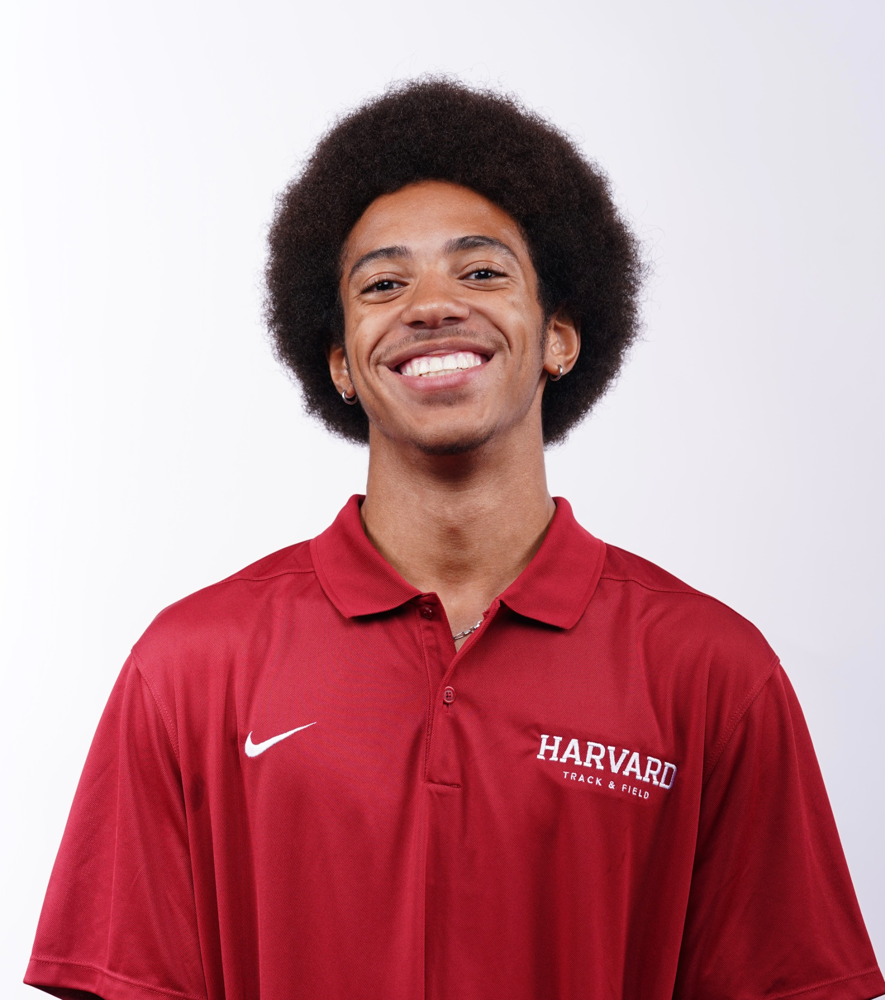
Running has shaped how I approach pressure, repetition, and the work it takes to perform when it matters.
National champion
Winning at sixteen gave me an early lesson in trusting preparation when the moment finally arrives.
Ivy League Championships
Won the Ivy League Championships 60m during my freshman year at Harvard.
Ivy League record
Part of the Harvard 4×100m relay that holds the Ivy League record.
Engineering is one part of my life. I also play double bass, work with younger students, and make time for the people and places that keep me grounded.
Those experiences shape how I work: listen closely, stay patient, and remember that what we build should make life better for someone.
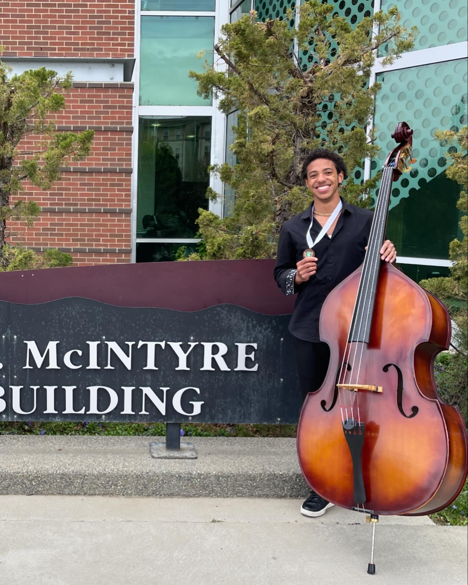
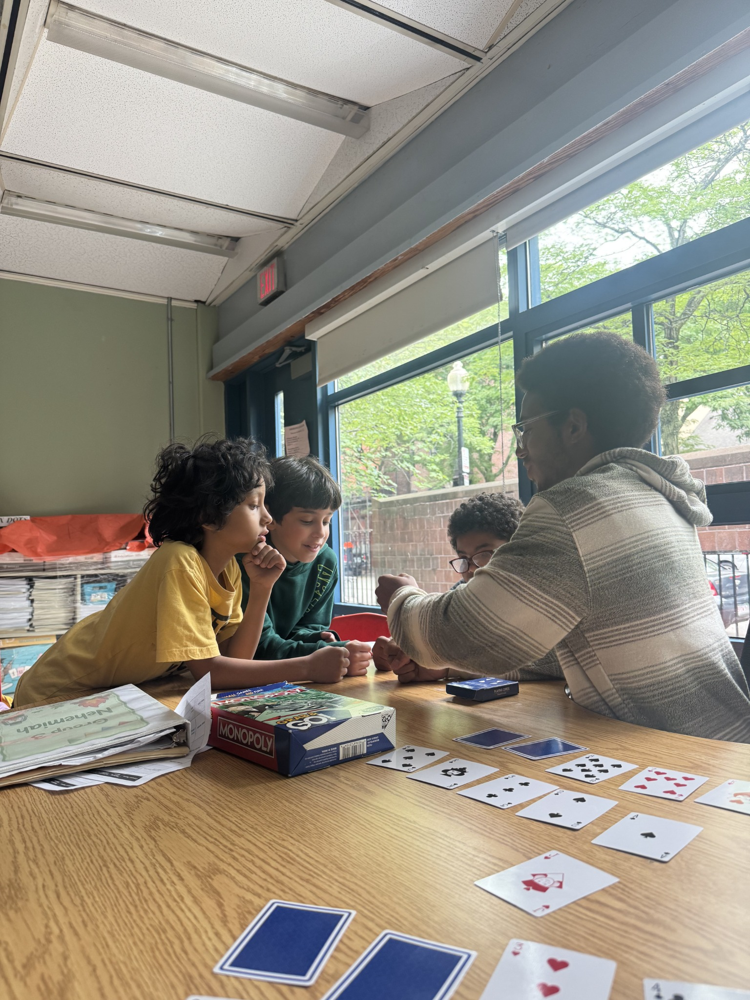
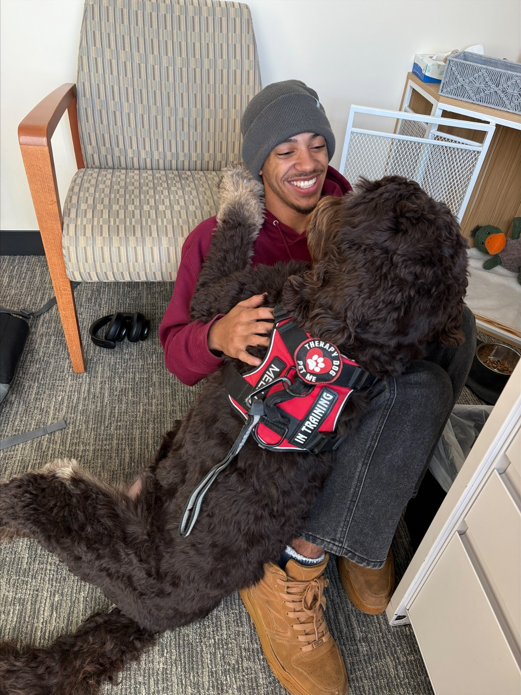
A fuller look at the robots, simulations, embedded systems, and small experiments that have shaped how I build.
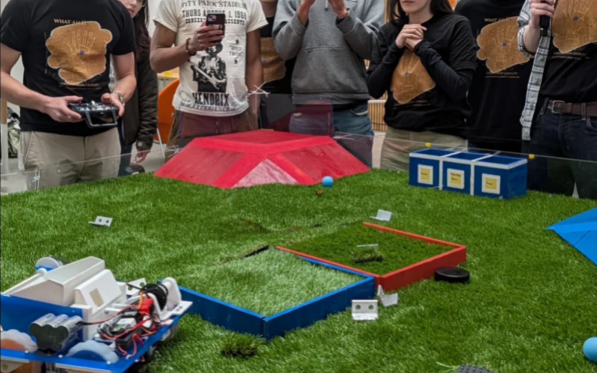
01 / Mechanical design
Designed and fabricated a compact Turf Wars robot around a rotating scoop for intake, storage, and scoring. The robot went on to win the bi-annual Turf Wars competition in my engineering class.
SolidWorks · fabrication · testing
Read the report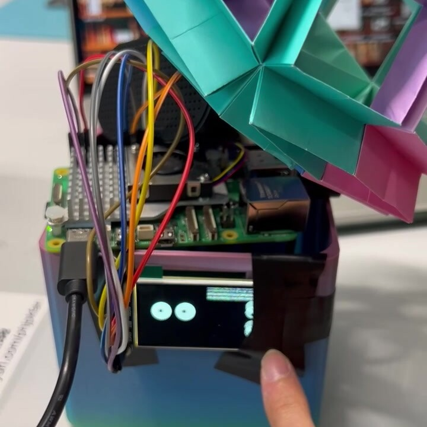
02 / Embedded hardware
A small conversational robot built with a Raspberry Pi, microphone, speaker, animated eyes, and a 3D-printed shell.
Raspberry Pi · Python · soldering
View the project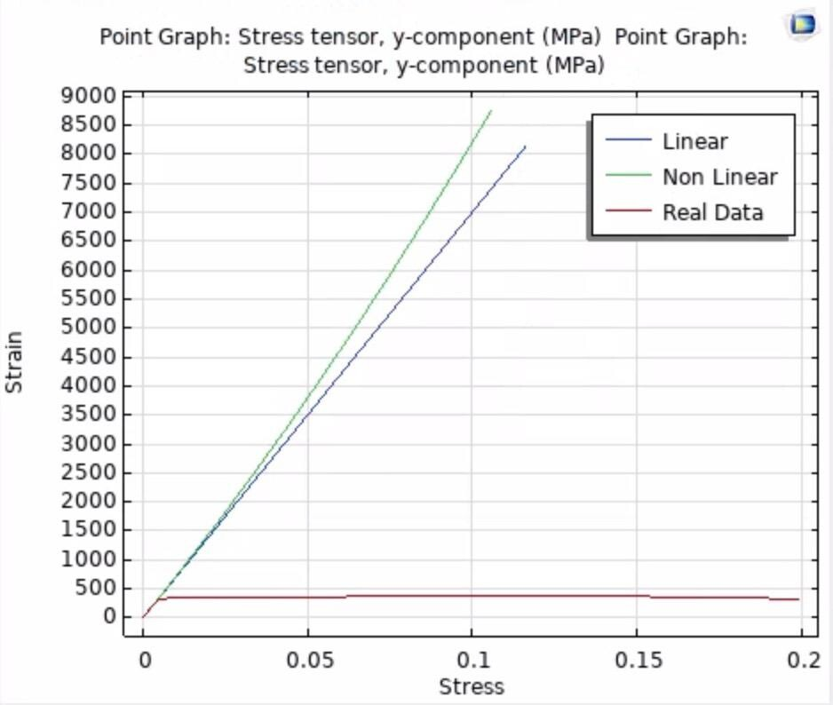
03 / Simulation
Used COMSOL to compare linear and nonlinear elasticity and study how load conditions change stress distribution.
COMSOL · mechanics · stress / strain
Read the report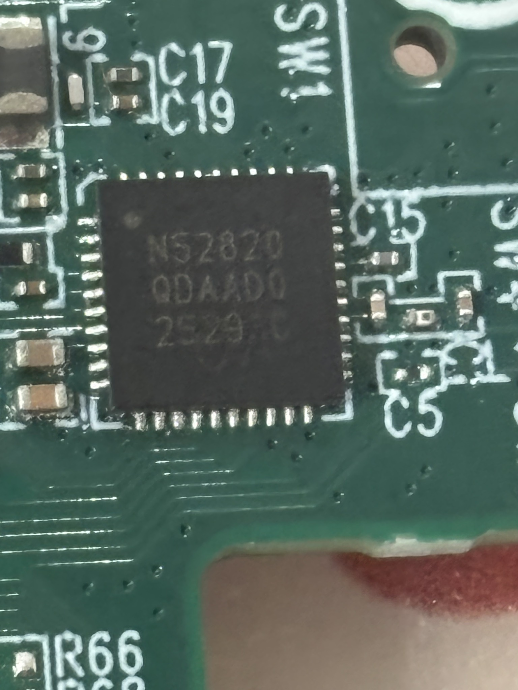
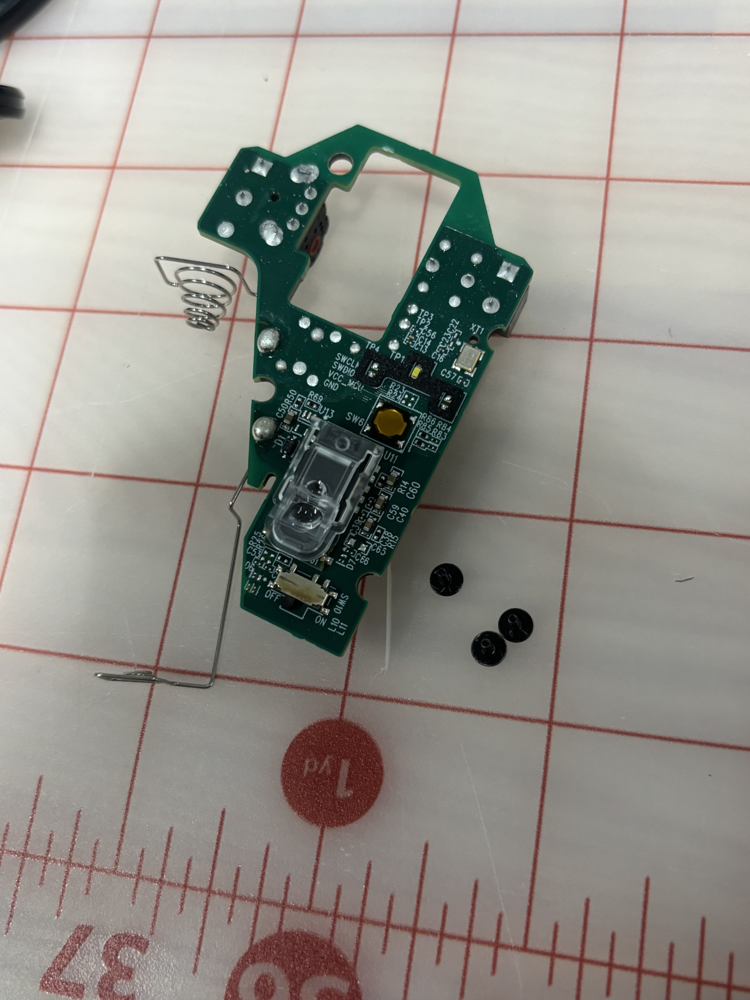
04 / Hands-on study
Taking objects apart is often the fastest way to learn how they were designed.
Inspection · components · curiosity
More work
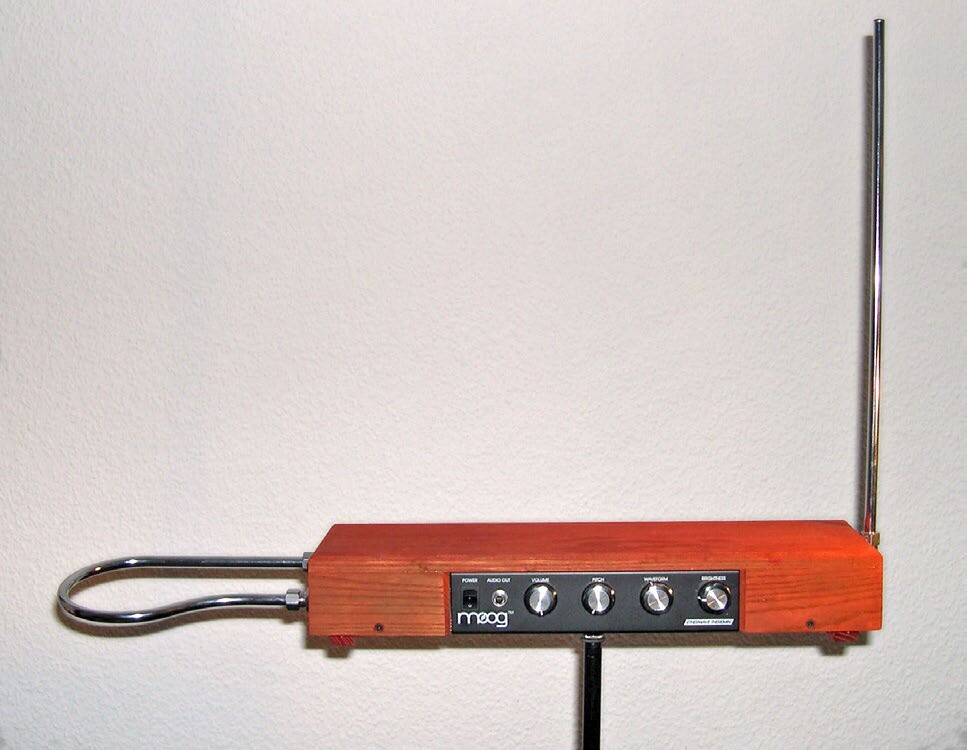
05 / Analog electronics
Arduino · op-amps · filters
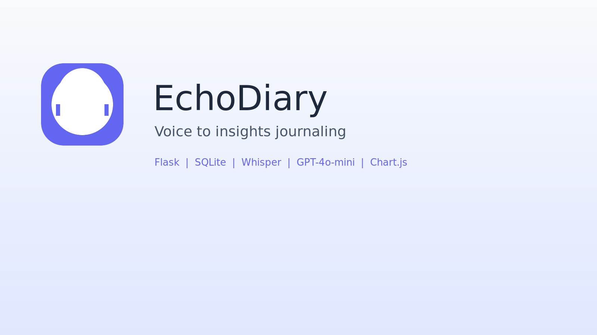
06 / Software
Flask · SQLite · voice interfaces
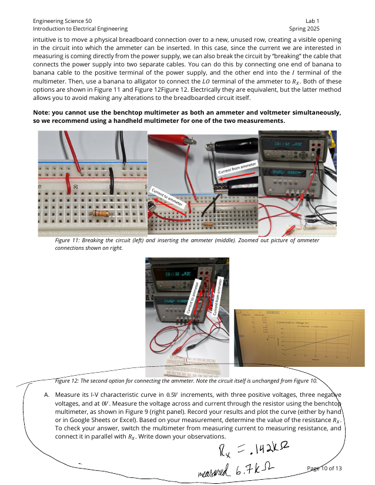
07 / Thermodynamics
Measurement · modeling · uncertainty
Get in touch